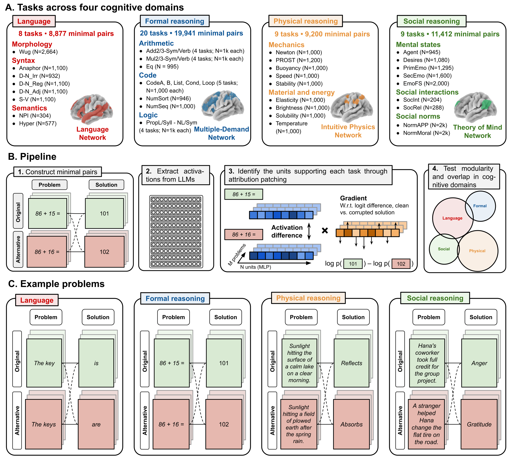
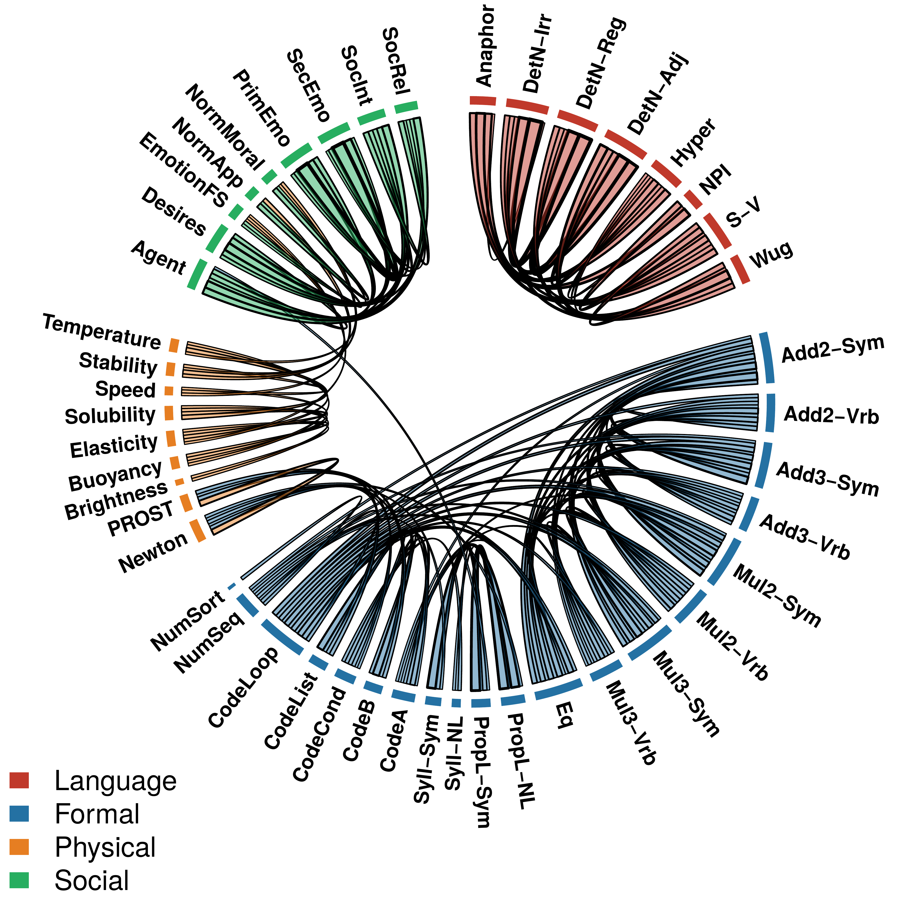
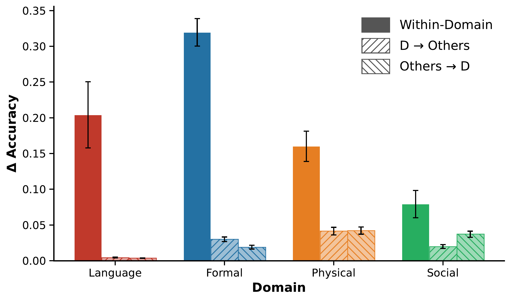
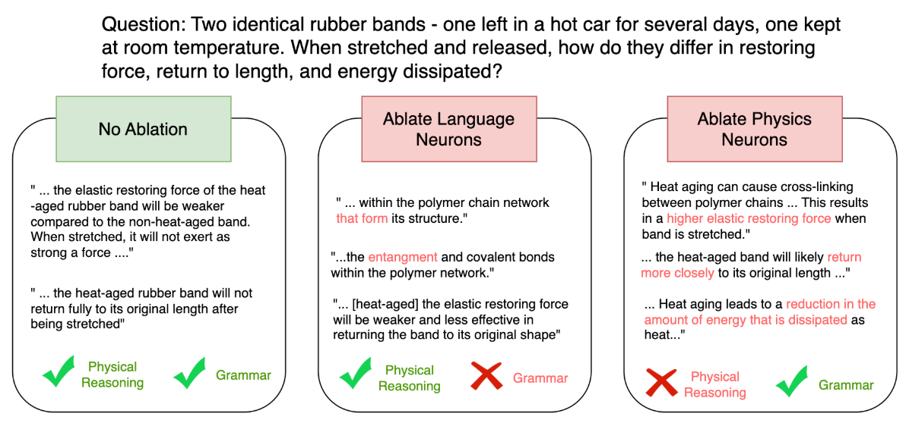

Abstract
The human brain exhibits a striking degree of functional specialization, with distinct networks supporting language, formal reasoning, reasoning about other minds, and reasoning about the physical world. Is this modular organization a fundamental principle of how intelligent systems must be built, or an evolutionary accident specific to biological brains? Here, we test whether a similar organization emerges in Large Language Models, another class of intelligent systems created through a very different optimization process. Using circuit analyses across N = 46 tasks spanning four cognitive domains (language, formal reasoning, social reasoning, physical reasoning), we find that LLMs develop a modular architecture that mirrors the human brain: tasks drawing on the same network in humans recruit overlapping neurons in LLMs, whereas tasks drawing on different networks recruit distinct neurons. The convergent emergence of modularity in brains and neural networks suggests that it may be a fundamental property of intelligent systems.
MethodLocalizing the units that support each task
We localize task-supporting units with attribution patching. For each of 46 tasks across four cognitive domains we build minimal original/alternative input pairs whose correct continuation flips. A unit's importance is its original-vs-alternative activation difference times the gradient of the original−alternative logit difference, summed over examples. We then quantify modular organization from the pairwise overlap of each task's top-0.1% units, and validate it causally by ablating those units and measuring cross-task transfer. Six instruction-tuned LLMs (24B–123B, four families) are analyzed.

ExploreThe 46 tasks · one example each
Each task is defined by minimal original / alternative input pairs whose correct continuation flips. Click any task below to see one representative pair: the original prompt and its correct continuation in green, and the alternative prompt with the flipped continuation in red.
One example per task; full datasets (the count shown per task) are in the code repository.
Result · StructuralA modular organization of reasoning systems

Tasks supported by the same brain network in humans are solved by overlapping sets of neurons in the model, whereas tasks that draw on different networks recruit largely separate sets. Averaged across six models, this within-domain overlap exceeds cross-domain overlap by more than fourfold (12.9% vs 3.0%, permutation test p < 0.0001). Unsupervised hierarchical clustering of the 46×46 task matrix recovers the four cognitive domains defined in neuroscience (Adjusted Rand Index = 0.78, p < 0.0001), and the structure is highly consistent across models (mean pairwise Kendall's τ = 0.70 ± 0.06). The same modular organization emerged in six different LLMs, from 24 to 123 billion parameters.
Result · CausalLesioning a domain's neurons selectively breaks that domain
To test causal specificity, we ablate the top-0.1% units identified for a source task and evaluate the model on a different target task. Within-domain ablations cause a 25.9% accuracy drop versus 2.5% for cross-domain ablations (ratio 10.3×, p < 0.0001), consistent across models (Kendall's τ = 0.59 ± 0.05). The asymmetry holds for every domain individually and in both directions of cross-domain ablation.

A qualitative dissociation. Inspecting the models' outputs after targeted ablations reveals a separation between linguistic form and reasoning content. Lesioning the neurons selectively required for the language tasks largely preserved the models' reasoning abilities but introduced syntactic and morphological errors. Conversely, lesioning physical-reasoning neurons led the models to incorrect reasoning and conclusions while preserving the linguistic well-formedness of the output.

ControlModularity is contingent on task competence
The modular organization is not an artifact of the datasets, the contrastive design, or the attribution pipeline. Running the identical pipeline on GPT-2 (124M), which does not reach above-chance performance on the reasoning tasks, recovers only the broad division between Language and the rest of cognition, not the finer separation among the three reasoning domains. Modularity emerges only where the model can actually solve the tasks.

Why modularity emerges
A class of intelligent systems shaped by an entirely different process, gradient descent on next-token prediction, develops the same modular organization that characterizes the human brain: language, formal reasoning, physical reasoning, and social reasoning are each supported by largely distinct sets of neurons, while tasks within a domain share them. One influential account of cortical modularity appeals to metabolic cost, the idea that activating fewer neurons per task saves energy. That pressure does not exist in a transformer, whose forward pass carries no metabolic cost and whose loss never penalizes how many neurons are active. Modularity emerges anyway, which suggests this biological constraint is not necessary for functional specialization to arise.
What might drive it instead? When several forms of reasoning must operate on the same input, the system faces pressure to keep those computations from interfering, both so that simultaneous representations stay separable and so that learning one domain does not overwrite another. Allocating distinct neurons to distinct computations protects against both. More broadly, the result shows the value of LLMs as a second kind of intelligent system against which to test claims about the structure of cognition: when a feature of the human mind reappears in a system built so differently, it is more likely to reflect a general principle of intelligence than an accident of biology.
Citation
@article{han2026modular,
title = {Modular Cognitive Architecture Emerges in Large Language Models},
author = {Han, Pengrui and Andreas, Jacob and Fedorenko, Evelina
and de Varda, Andrea Gregor},
journal = {Preprint},
year = {2026},
note = {Code and data: github.com/Pengrui-Han/LLM_Modularity_Final}
}